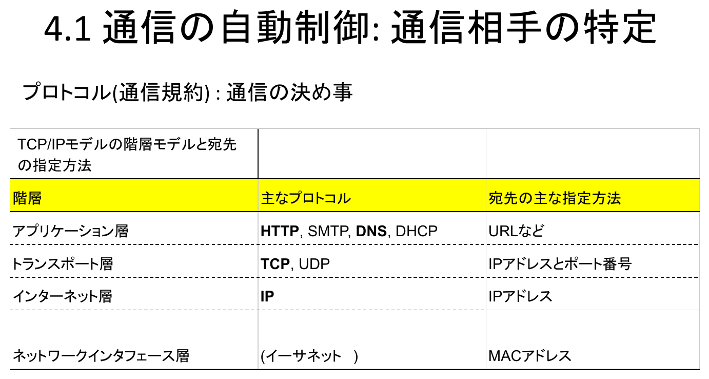
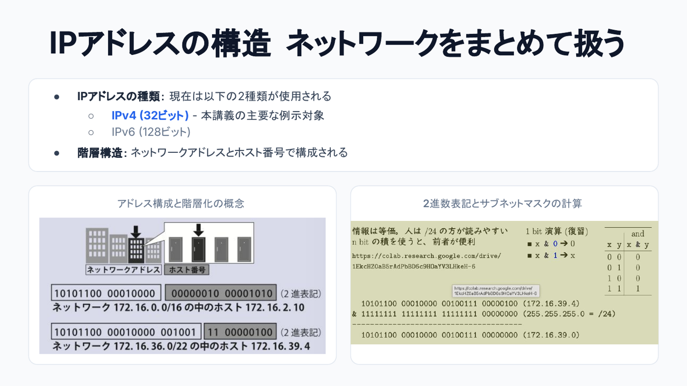
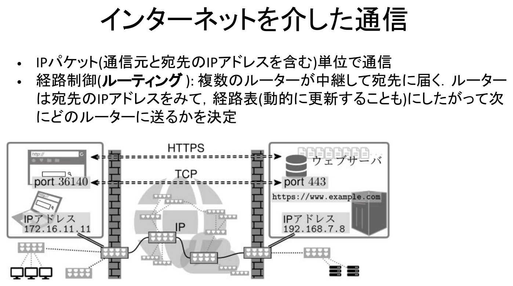
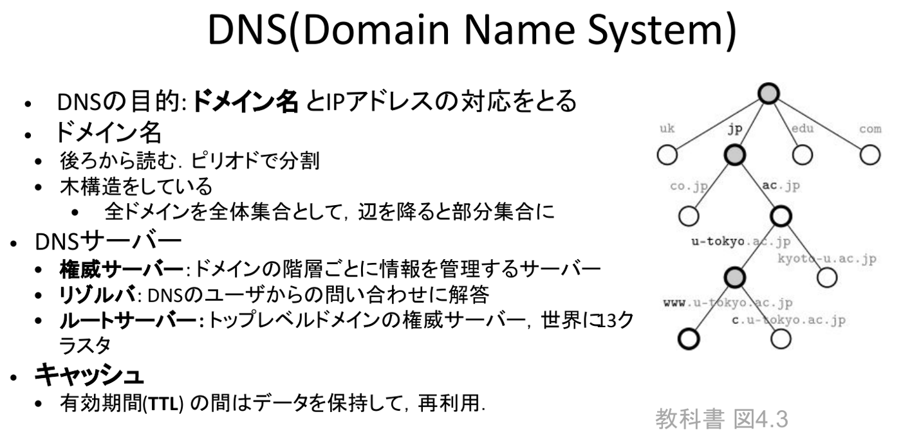
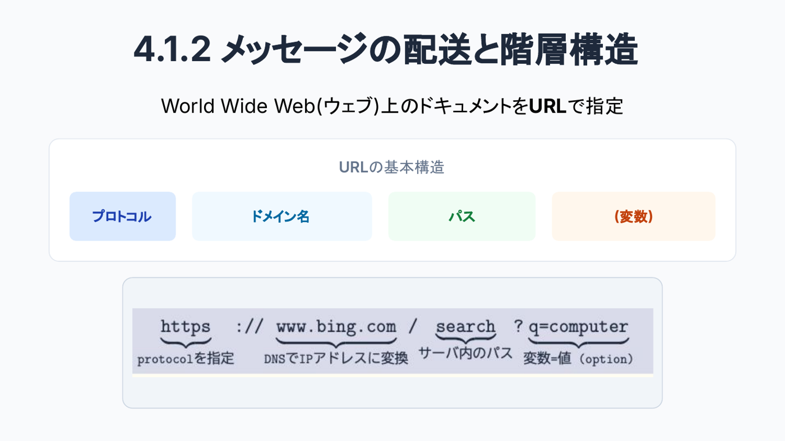
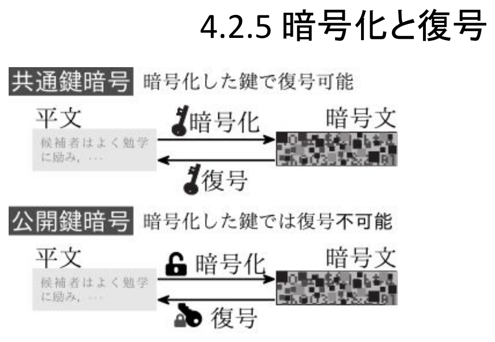
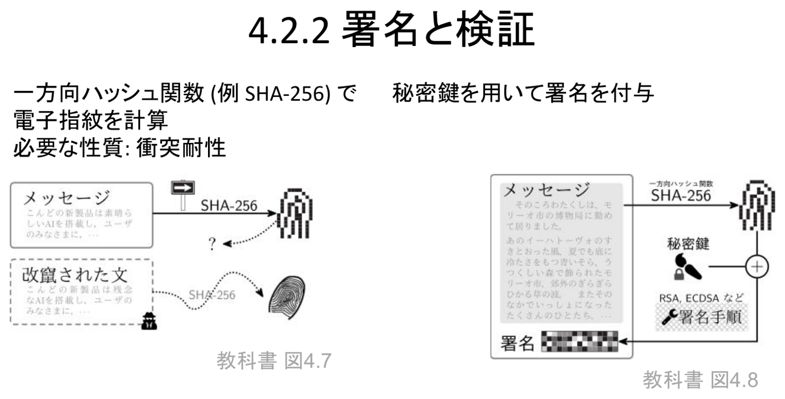
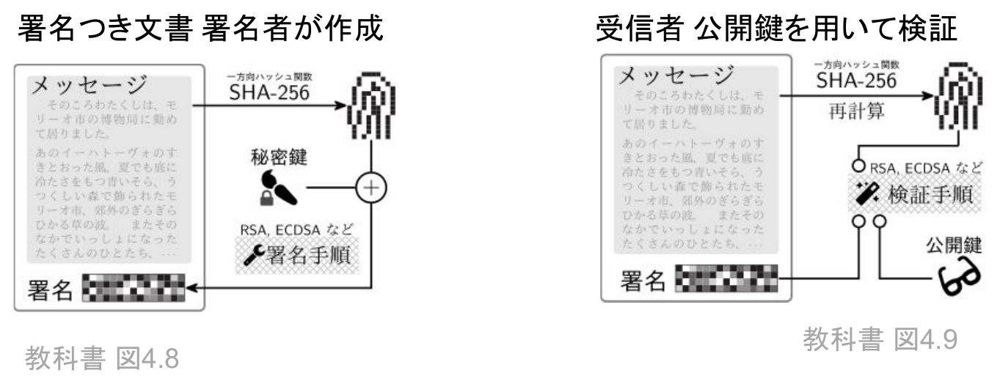
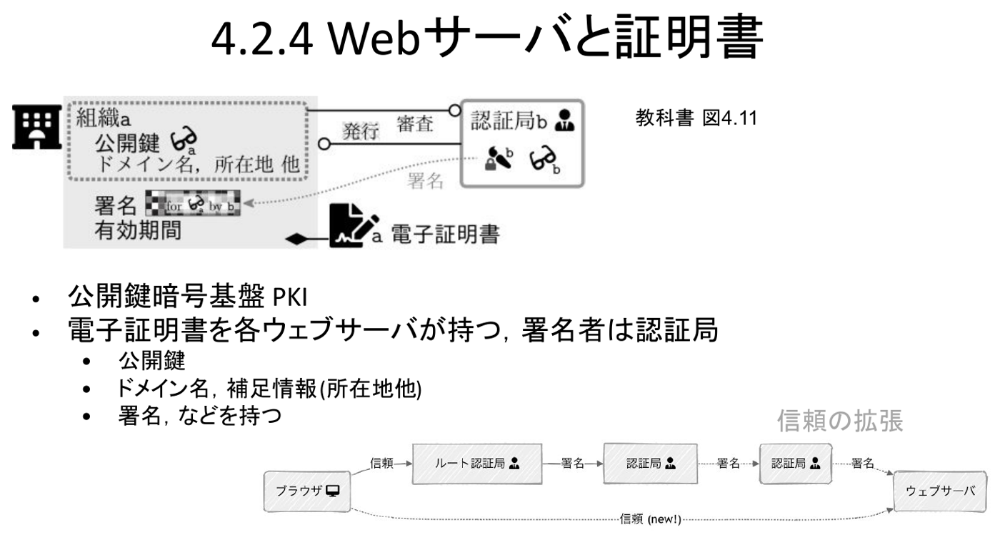
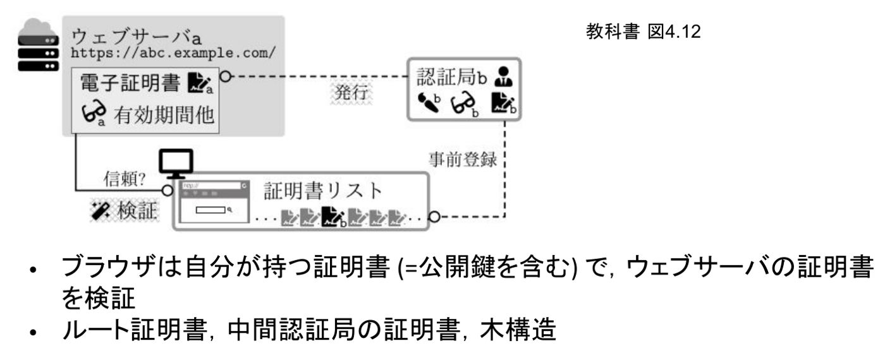

情報｜田中哲郎クラス講義ノート
このページは講義スライドの流れを節単位に組み直し、用語の関係と学習上の要点を説明する。プロトコル・ネットワーク・暗号を中心に、定義だけでなく、なぜ必要か、どのように使うかまで確認する。
LINEでメッセージを送る、ウェブページを開く、といった操作の裏側では、物理的に離れた、メーカーも設計も異なる機器同士がデータをやり取りしている。これが成立するのは、送り手と受け手があらかじめ共有した約束事に従っているからである。第2章で見た「情報システムを構成要素へ分解する」という見方を、ここでは通信という一つの機能そのものに向ける。
プロトコルとは、データの表現形式、通信の開始・終了の合図、誤りが起きたときの扱いなど、通信に関わる決め事の集合である。プロトコルが共有されているからこそ、異なるメーカーの機器・異なるOSのソフトウェア同士でも、送ったデータを受け手が正しく解釈できる。
実際の通信は、単一の巨大なプロトコルではなく、役割ごとに積み重ねられた階層として設計されている。これは第2章のアプリ・OS・ハードウェアの分離と同じ発想で、各層は一つ下の層が提供する機能だけを使い、自分より上の層には自分の役割だけを提供する。こうすることで、無線LANが有線イーサネットに置き換わっても、その上で動くアプリケーションやウェブサービスに手を加える必要がない。

上位層に行くほど人間にとって扱いやすい名前（URL）になり、下位層に行くほど機械が直接処理しやすい固定長の番号（IPアドレス、MACアドレス）になる、という対応を意識すると、この後の節で扱うアドレス・DNS・URLの関係が整理しやすくなる。
通信を始めるには、まず相手を指定しなければならない。ここで区別すべきなのは、人間が読んで選ぶための名前と、機械が機器を一意に識別するためのIDという、性質の異なる2種類の識別子が使われているという点である。
通信相手そのものの識別だけでなく、通信相手以外の対象へIDを与える発想も広く使われている。たとえば出版済みの論文に与えられるDOI（Digital Object Identifier）は、10.15083/00043124のような恒久的な識別子であり、https://doi.org/10.15083/00043124という形でその論文の所在地を取得できる。論文自体の保存場所が将来変わっても、DOIという識別子は変わらないという設計である。
ここまでの例が示すのは、IDを知っているだけでは通信はできないということである。実際に通信するには、IDから「今どこに、どうやって到達すればよいか」という具体的な通信手段を得る仕組みが別途必要になる。次節以降で扱うIPアドレスとDNSは、まさにこの「IDから通信手段を得る」役割を担っている。
インターネット層で機器を識別する番号。現在は32ビットのIPv4と128ビットのIPv6の2種類が使われている（本章の例示は主にIPv4）。IPアドレスは一続きの番号ではなく、ネットワークアドレスとホスト番号から成る階層構造を持つ。ネットワークをひとまとめにして扱うことで、経路表の規模や管理の手間を抑えている。

「ネットワーク172.16.0.0/16の中のホスト172.16.2.10」のように、/16や/22という表記（CIDR表記）は、先頭何ビットまでがネットワークアドレスかを表す。残りのビットがそのネットワーク内でのホスト番号になる。ネットワークアドレスとホスト番号を分離する計算には、各ビットを掛け合わせるAND演算（x&0=0、x&1=x）を使い、IPアドレスとサブネットマスクをビットごとにANDすればネットワークアドレスが取り出せる。
ネットワーク172.16.36.0/22に属するホスト172.16.39.4について、ネットワークアドレスを求めよ。
172.16.39.4を2進数にすると10101100 00010000 00100111 00000100。/22はサブネットマスクの先頭22ビットが1であることを意味するので、マスクは11111111 11111111 11111100 00000000。両者をビットごとにANDすると10101100 00010000 00100100 00000000、すなわち172.16.36.0が得られる。残りの10ビットがこのネットワーク内でのホスト番号にあたる。
インターネットでは、データをIPパケットという単位に分割して送る。各パケットには通信元と宛先のIPアドレスが含まれており、経路上の複数のルータがこれを中継しながら宛先まで届ける。

ルータは、パケットの宛先IPアドレスを見て、自身が持つ経路表にしたがって次にどのルータへ転送するかを決定する。経路表は動的に更新されることもあり、特定の1台が全経路を把握しているわけではない。各ルータが自分の知っている範囲だけを判断して中継をリレーしていくことで、インターネット全体としては特定の管理者を必要とせずに、規模の拡大や一部の障害に対して柔軟に対応できる。
IPアドレスは機械にとって扱いやすい反面、人間が覚えて入力するには不向きである。DNS（Domain Name System）は、www.u-tokyo.ac.jpのような人間に読みやすいドメイン名と、実際の通信に使うIPアドレスとの対応をとる仕組みである。

ドメイン名は後ろから読み、ピリオドで区切って木構造をなす。全ドメインを全体集合とみなすと、辺を1本降りるごとに部分集合が絞り込まれていく——たとえばjpの中のac.jp、その中のu-tokyo.ac.jp、さらにその中のwww.u-tokyo.ac.jpという具合である。
この木構造を実際に管理・応答するサーバーにも役割分担がある。
毎回すべての問い合わせでルートサーバーからたどり直すのは非効率なので、キャッシュを使う。一度得たドメイン名とIPアドレスの対応は、TTL（有効期間）の間だけ保持して再利用し、権威サーバーへの問い合わせ回数と応答の遅延を減らす。ただし、TTLの間はドメイン側でIPアドレスを変更しても利用者側にすぐには反映されない、というキャッシュ特有の遅延も生じる。
World Wide Web上のドキュメントはURLで指定する。URLはプロトコル・ドメイン名・パス・（変数）という4つの部分から構成される。

たとえばhttps://www.bing.com/search?q=computerでは、httpsが通信に使うプロトコルを指定し、www.bing.comがDNSでIPアドレスに変換されるドメイン名、searchがサーバ内のパス、q=computerが変数（オプションのキーと値）にあたる。この構造を知っていれば、初めて見るURLでも「通信先」「その中のどの資源か」「どんな条件を渡しているか」を切り分けて読める。
組織のネットワークの出入り口では、通信を無条件に素通りさせるのではなく、監視・制御する仕組みが置かれる。
組織等の出入り口のルータで通信を監視・遮断する仕組み。マルウェア配布などでブラックリストに掲載されたIPアドレスとの通信を遮断する運用が代表例である。OP25B（Outbound Port 25 Blocking）は、迷惑メール（SPAM）送信によく使われる25番ポートでの外向き通信を、多くのファイアウォールがブロックする対策である。
日本中央競馬会（JRA）のサイトがgamblingのジャンルに分類され、東京大学のファイアウォールで遮断された結果、たまたま共同研究をしていた農学部の通信まで巻き添えで止まってしまったことがある。ブラックリストによる遮断は、対象を大きなカテゴリで括るほど、無関係な正当な通信まで止めてしまう副作用を伴う。
IPv4は32ビットしかなく、世界中の機器に直接グローバルなIPアドレスを割り当てるのは難しい。そこで組織内部ではプライベートアドレス（192.168.0.0/16、172.16.0.0/12、10.0.0.0/8）を使い、外部と通信するときだけIPアドレスとポート番号を変換して代理通信する（UTokyo WiFiやECCS端末のIPアドレスなどがこの例にあたる）。VPN（Virtual Private Network）は組織外からの通信をあたかも組織内からの通信であるかのように扱う技術であり、プロキシサーバーは主にウェブについての代理通信を提供する仕組みである。
古典的なウェブの表示は単純である。ウェブブラウザがウェブサーバー上のHTMLファイルを要求（request）し、サーバーはそれに対する応答（response）としてファイルを送り返し、ブラウザがそれを表示する。このやり取りの決め事がHTTP（HyperText Transfer Protocol）である。ただし、実際のウェブページは1つのHTMLファイルだけで完結せず、画像ファイルやブラウザ上で動くJavaScriptファイルなど、しばしば別のウェブサーバー上にある複数の別ファイルを組み合わせて構成されている。第2章でGoogle Mapsを題材にNetworkタブを観察したのと同じように、一見一枚に見える画面の裏側で多数の要求・応答が発生している。
HTTPの通信は1回の要求＋応答で完結してしまうため、ログイン状態のように複数回の通信にまたがってサービスを受け続ける仕組みが別途必要になる。そこで、サーバはクライアントを識別する符号（Cookie）をランダムに生成し、最初の応答（Set-Cookieヘッダ）でブラウザに渡す。以降、ブラウザはこの符号を自分からサーバへの通信に付け加えることで、サーバは同じ利用者からの通信であると識別できる。
Cookieの活用例には、同じURLでも個人ごとに異なる内容を見せる（ログイン時など）ことや、閲覧履歴に合わせた広告を表示することが挙げられる。自サイト以外のドメインが発行するサードパーティークッキーは、複数サイトをまたいだ行動追跡に使われるため、プライバシー保護の観点から規制が進んでいる（GDPRについては第10章で扱う）。
パスワードを盗む目的の偽サイトは数多く存在する。URLを目で見て確認する対策には限界があり、g00gle.comのように紛らわしいURLを使われたり、公衆の無料Wi-Fiで改ざんされたDNSサーバーへ誘導されたりすると、正しく見えるURL・IPアドレスを指定していても、実際には偽のサーバーに接続してしまう。途中の通信経路自体が信用できない場合でも、接続先のウェブサーバーそのものが正しいことを確認できるようにするのが、電子署名と電子証明書を用いたHTTPSである（仕組みは§7〜§9で扱う）。
電子メールでも、送信者のドメイン全体を詐称される問題がある。SPF（Sender Policy Framework）はドメインの正規の送信サーバーのIPアドレスをDNSに指定しておき、それ以外のIPアドレスから送られたメールを信用しない、という対策である。DKIM（DomainKeys Identified Mail）は送信サーバーがメールに電子署名を付与し、DNSに登録された証明書で検証できない署名のメールを信用しない、という対策である。どちらも、DNSという信頼できる名前解決の仕組みを土台にして、なりすましを防いでいる点が共通する。

公開鍵暗号の代表例がRSAや楕円曲線暗号である。これらは、大きな数の素因数分解や離散対数問題のように、計算量的に解くことが極めて困難な数学的問題を安全性の基礎に置いている——公開鍵から秘密鍵を計算で求めようとしても、現実的な時間では終わらない、という前提である。
素因数分解や離散対数問題が「難しい」というのは、現在使われているコンピュータを前提にした話であり、絶対的に解けないという意味ではない。量子コンピュータが実用化されれば、同じ問題が効率的に解けるようになる可能性が指摘されている。暗号方式の安全性は固定的な性質ではなく、その時代の計算資源との相対関係で評価すべきものである。
公開鍵暗号は機密通信だけでなく、認証——アクセスしている相手が主張どおりの本人・機器であるかの確認——にも使われる。認証で防ぎたい問題は、なりすまし・改ざん・否認の3つに整理できる。ここで公開鍵と秘密鍵の非対称性が重要になる。公開鍵は複製されて複数の人が持ってよいが、秘密鍵は常にただ1人（1台）が運用する。したがって「誰の秘密鍵か」「誰の（その秘密鍵に対応する）公開鍵か」「その公開鍵を誰が利用するか」という3つを混同しないことが、次節以降の署名・証明書の仕組みを理解する鍵になる。
一方向ハッシュ関数（例：SHA-256）は、任意の長さのメッセージから固定長の「電子指紋」（メッセージダイジェスト）を計算する関数である。求められる性質は衝突耐性——元のメッセージがほんの一部でも変われば、得られるハッシュ値も別のものになり、後から偶然同じハッシュ値を持つ別の文書を作ることが事実上できない、という性質である。この性質のおかげで、ハッシュ値を比較するだけで改ざんの有無を検知できる。

署名：署名者はメッセージのハッシュ値を計算し、それを自分の秘密鍵で処理する（RSA・ECDSAなどの署名手順）ことで署名を作る。検証：受信者は受け取ったメッセージから同じハッシュ関数で改めてハッシュ値を計算し、署名者の公開鍵を使ってその署名が正しいかを検証する。両者が一致すれば、メッセージが改ざんされておらず、かつ対応する秘密鍵の持ち主が確かに署名したことが確認できる——なりすましと改ざんの両方を1つの仕組みで検出できる点が電子署名の強みである。

マイナンバーカードには2種類の電子証明書が搭載されている。署名用電子証明書は氏名・住所・生年月日・性別の基本4情報を含むが、利用者証明用電子証明書は基本4情報を含まない。同じ「本人であることを示す」証明書でも、用途によって開示する情報の範囲を変える設計になっている。
なお、実際に手を動かして確認したい場合は、gpgコマンドを使って鍵の生成・暗号化・署名の検証を試す演習（はいぱーワークブック「26.8. GPG」）が用意されている。
前節までの署名・検証は、「正しい公開鍵を最初から持っている」ことを前提にしていた。しかし、偽の公開鍵を本物だと思って受け取ってしまえば、それ以降の検証はすべて意味を失う——攻撃者は自分の秘密鍵とペアになった偽の公開鍵を本人のものだと偽って渡し、あたかも正しい署名であるかのように見せかけることができてしまう。
aさんから公開鍵aを受け取ったカラスは、それが本当にaさん本人のものか確信が持てない。ここで、bさんが公開鍵aに対して署名しているとする。カラスがすでにbさんの公開鍵bを信頼して持っていれば、公開鍵aに付与された署名を公開鍵bで検証することで、「aさんの公開鍵a」であることを、bさんへの信頼を通じて確認できる。これは信頼の拡張——直接は知らない相手を、すでに信頼している別の相手の保証によって信頼する、という考え方である。ウェブの文脈では、人物a＝ウェブサーバー、カラス＝ウェブブラウザに対応する。
電子証明書は、公開鍵・ドメイン名や所在地などの補足情報・署名（発行者による）をひとまとめにしたものである。ウェブサーバーは自分の電子証明書を保持し、その署名者は認証局（CA）である。認証局が組織の身元を審査したうえで証明書を発行・署名する、この一連の仕組みをPKI（公開鍵基盤）と呼ぶ。

認証局自身の証明書も、さらに上位の認証局によって署名されうる。ルート認証局→中間認証局→……→ウェブサーバーという署名の連鎖が、木構造をなす形で「信頼」を末端まで拡張していく。

ブラウザはあらかじめ多数のルート証明書を信頼できるものとして保持している（証明書リスト）。ウェブサーバーが提示する証明書から、署名をたどって中間認証局の証明書、さらにルート証明書へとさかのぼり、ブラウザが持つ証明書リストのどれかに行き着けば、そのウェブサーバーは信頼できると判断する。これにより、途中の通信経路（公衆Wi-Fiや改ざんされたDNSなど）を信用できない状況でも、接続先のウェブサーバー自体が正当であることをHTTPSとして確認できる——これが§6で触れた「通信相手の確認」の技術的な裏付けである。
用語を単独で暗記するのでなく、題材のどこにその概念が現れ、どの条件を根拠に判断するかを説明できるようにする。
プロトコル・ネットワーク・暗号は独立した暗記事項ではなく、情報を表現し、処理し、伝え、社会で安全に利用するための一連の考え方としてつながっている。各節の太字語を自分の言葉で説明できるか確認しよう。